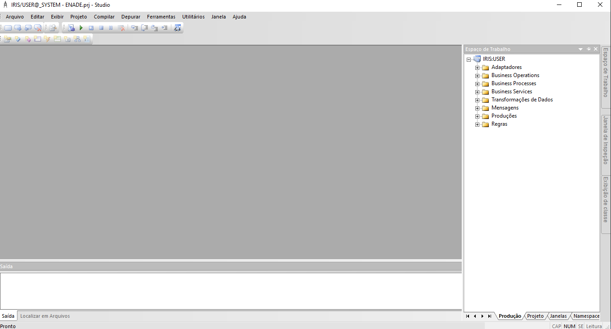

O que é o InterSystems IRIS?
É um banco de dados orientado a objetos com uma linguagem de programação de uso geral integrada, sendo capaz de fornecer suporte a vários processos e controle de simultaneidade. Quando utilizamos sua versão para desenvolvimento, podemos notar quão versátil essa ferramenta é. Ao clicar em seu ícone, que fica na Barra de Tarefas podemos observar diversas funcionalidades, como o terminal, o Portal de Administração e o ambiente de programação Studio!
Ambiente de Programação Studio:
Uma IDE que fornece todas as funcionalidades necessárias para o desenvolvimento em Caché Object Script (COS).
No Iris, é possível escrever rotinas e/ou classes. As classes fornecem recursos orientado a objetos, mas é possível chamar uma classe de uma rotina, chamar uma rotina de uma classe, usar um método em uma rotina, criar objetos em rotinas... enfim, podemos utilizar ambos os conceitos de programação - estruturada e orientação a objetos - de forma intercambiável. Além disso, podemos utilizar o InterSystemsSQL incorporado no código para acessar dados do banco e utilizá-los em rotinas ou classes.
Mas como isso é possível?
Isso é possível pois todos os dados no banco de dados Iris são armazenados em uma variável especial que podemos pensar como arrays esparsos (pois seus subscritos não precisam ser contíguos), multidimensionais (pois os nós em um global podem ter qualquer número de subscritos) e persistentes (são armazenados diretamente no banco de dados e podem ser recuperado a qualquer momento por qualquer processo.). Sendo assim, podemos acessar os dados utilizando qualquer paradigma que desejarmos!
Além disso, existe uma variedade de biliotecas que contém diversas classes que facilitam diversos processos, como a de integração de sistemas, por exemplo.